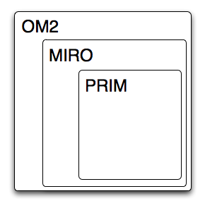

A message sent through a OM2 system must follow a set of ontologies. The relationship between them as depicted in the diagram below.
Most of what is done in pyom assumes the usage of the Om2 ontology, and in some cases the Miro ontology. The Prim ontology on the other hand is barely assumed.
We need a couple of ontologies to describe different parts of messages or messages used by the system. There are a number of different classes of ontologies:
Ontologies are not expected to be fixed once and for all, they are instead expected to evolve over time. Because of this version handling is extremely important. You can always find information about the version in the ontology itself. We will use the property versionInfo and will use the common major.minor.patch type of version numbering. But, it will not be uncommon that you have no idea which exact ontology a source is using. The only information that you have in these cases are the URIs that are used to name classes and properties. Because of this we have decided to place the major version number in the URI. The format use will be - like in prim-1. If no version number are present in the URI then that must be treated as if the version number was 0 (zero).
One effect of only placing the major version number in the URI is that minor changes must not change the ontology such that a receiver of a RDF following the ontology N.M will not be able to parse it and understand the result if its software is build based on N.K (K != M).
Using SVN you can always find the latest versions of the ontologies we use at:
svn co https://repository.umdac.umu.se/svn/om2/ontology/trunk